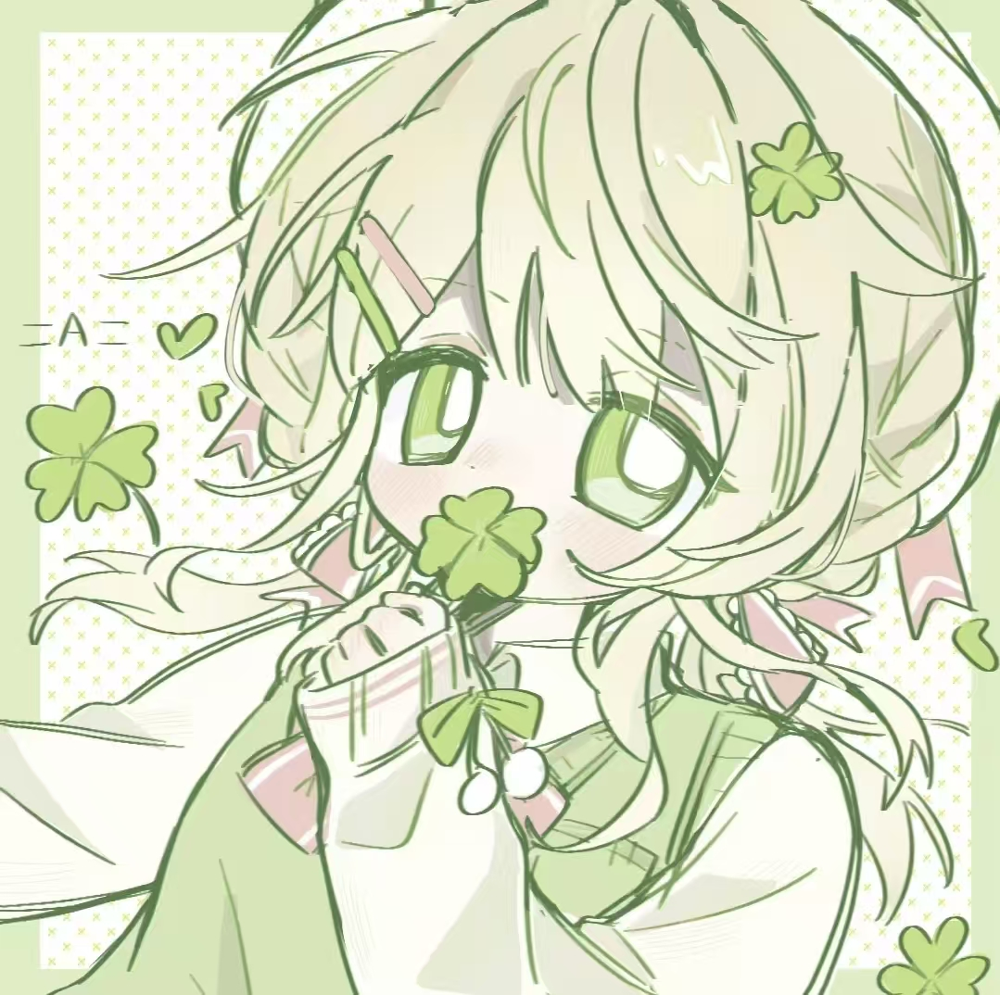
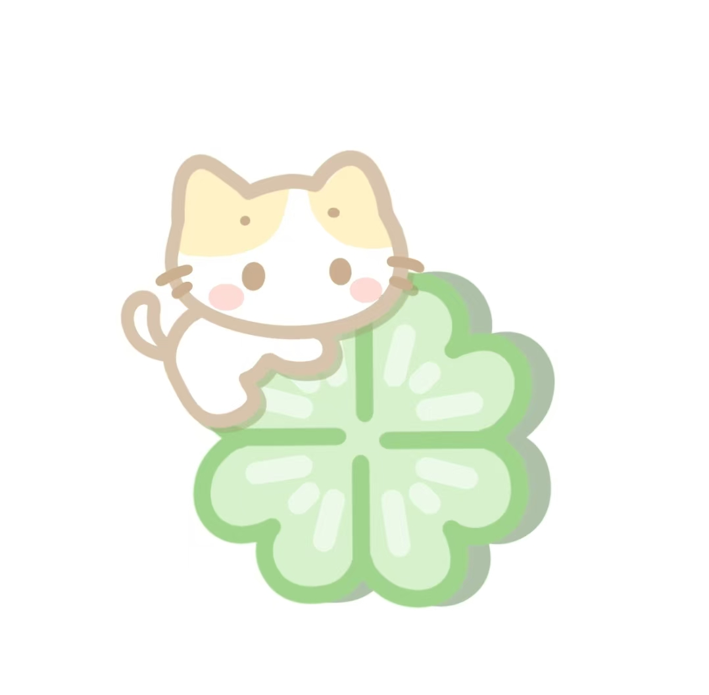
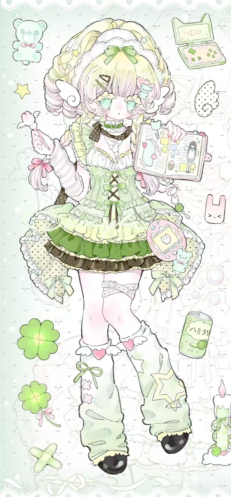

欢迎来到我的个人作品集网站 这里就像一间装满奇思妙想的小房间，每一个角落都藏着我用心打磨的小作品、小故事和小灵感～首先说说“关于我”：我叫小W，一个永远对世界保持好奇心的设计 学习者，喜欢小猫和阳光洒在键盘上的午后.你会在“关于我”里看到我的自画像、兴趣清单，还有我从零学习前端的可爱旅程。接着是我的“作品展示台”——这里收纳 了我做过的好玩项目：有仿画风格的个人主页、会眨眼的交互小动画，还有为流浪猫救助站做的宣传页面。我会在下面写下创作灵感和遇到的小挑战，让你不仅看到 结果，也看到过程。目前作品不算多，但每一个都倾注了心血，以后还会不断塞进更多好玩的东西哦～而“思考笔记”则是我脑内小剧场的实体化：记录学习路上的碎 碎念、踩坑后的顿悟、看到好设计时的尖叫，以及一些还没变成作品的小灵感。比如“为什么圆角矩形看起来更可爱？”“CSS动画如何让页面有呼吸感？”……没有长篇论文，只有像朋友聊天一样的学习日记。有时候也会分享一本喜欢的书、一个有用的插件，或者一个让自己拍大腿的报错解决 方案。我认为成长的过程本身就很值得被记录下来，哪怕笨拙也很珍贵。最后是“联系我”——如果你喜欢我的作品，或者有合作、建议、甚至只是想给我推荐一只可爱 的猫表情包，都欢迎通过这个板块找到我！那里有我的邮箱、小红书账号和一个悄悄埋下的留言小盒子。我会认真看每一条消息并努力回复。期待和你成为网友，一起在创作的世界里打滚撒欢！🐾
